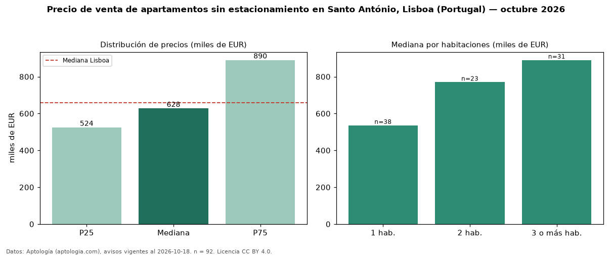

Precio de venta de apartamentos sin estacionamiento en Santo António, Lisboa (Portugal) — octubre 2026
Con 92 avisos vigentes, el precio mediano de apartamentos sin estacionamiento en venta en Santo António, Lisboa (Portugal) es EUR 627.500. Eso es 18 % menos que la mediana de todos los apartamentos en venta de Santo António (EUR 762.500, n = 132); este segmento reúne el 70 % de esos avisos. Por metro cuadrado, la mediana es EUR 8.979/m² (n = 92), 4 % por debajo del conjunto de referencia (EUR 9.398/m²). El área mediana anunciada es 74 m². El segmento con más oferta es el de 1 habitación (38 avisos, mediana EUR 535.600); pasar de 1 habitación a 3 o más habitaciones cambia la mediana +66 %. La mediana de todos los apartamentos en venta de Lisboa es EUR 660.000 (−5 % de diferencia). La mitad central de los avisos va de EUR 524.425 a EUR 890.000 (razón 1,7), una dispersión moderada. Datos: Aptología (aptologia.com), CC BY 4.0 — https://www.aptologia.com/pt/venda/lisboa/santo-antonio. Archivos: PDF, CSV con las cifras y gráfica PNG.

| Avisos únicos | 92 |
|---|---|
| Percentil 25 | COP 524.425 |
| Mediana | COP 627.500 |
| Percentil 75 | COP 890.000 |
| Mediana por m² | COP 8.978 |
Fuente: avisos vigentes de portales inmobiliarios recopilados por Aptología, deduplicados (mínimo 30 avisos únicos por celda). Precios pedidos, no cerrados. Fecha: 2026-10-18.